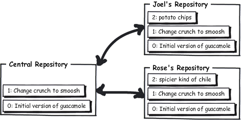

A forma mais comum de se colaborar usando Mercurial é configurando um servidor central, além dos repositórios particulares que cada um tem em seus computadores. Nós podems usar o repositório central como um espaço de trocas, onde nos reunimos para negociar sobre as alterações que estamos fazendo.

executa um servidor web para tornar o repositório atual disponível na Internet
O jeito rápido e rasteiro de se criar um repositório central é usar o servidor web embutido no Mercurial—tudo o que você precisa é criar um repositório com hg init e então serví-lo na rede com hg serve. Por padrão ele será servido na porta 8000.
C:\> mkdir CentralRepo C:\> cd CentralRepo C:\CentralRepo> hg init C:\CentralRepo> hg serve
Como este meu computador é chamado joel.example.com, eu posso só acessar http://joel.example.com:8000 com um navegador web e confirmar que o servidor está ativo e sendo executado, ainda que o repositório esteja completamente vazio.
faz uma cópia completa de um repositório inteiro
Com o servidor web central sendo executado, eu posso clonar este repositório do servidor em algum lugar no meu próprio computador para meu uso. Neste caso, este repositório está vazio agora, então eu obterei apenas um outro repositório vazio quando eu cloná-lo.
C:\Users\joel> hg clone http://joel.example.com:8000/ receitas
no changes found
updating to branch default
0 files updated, 0 files merged, 0 files removed, 0 files unresolved
C:\Users\joel> cd receitas
C:\Users\joel\receitas> dir
Volume in drive C has no label.
Volume Serial Number is 84BD-9C2C
Directory of C:\Users\joel\receitas
02/08/2010 02:46 PM <DIR> .
02/08/2010 02:46 PM <DIR> ..
02/08/2010 02:46 PM <DIR> .hg
0 File(s) 0 bytes
3 Dir(s) 41,852,125,184 bytes free
Agora eu vou criar um arquivo chamado guac contendo a minha famosa receita de guacamole.
* 1/2 cebola roxa picada (cerca de 1/2 xícara)
* 1-2 pimentas dedo-de-moça, sem talo e sem sementes, picadas
* 2 colheres de sopa de coentro picado bem fininho
* 1 colher de sopa de suco de limão
* 1/2 colher de chá de sal grosso
* Uma pitada de pimenta-do-reino moída na hora
* 1/2 tomate maduro, sem pele e sem sementes, picado
Misture bem todos os ingredientes juntos.
Sirva com salgadinhos tipo nachos.

Vou adicionar este arquivo e dar commit nesta primeira versão oficial:
C:\Users\joel\receitas> hg add adding guac C:\Users\joel\receitas> hg commit
Vou escrever um comentário para o commit:

Vou editar brevemente este arquivo e fazer uma pequena alteração, só para que ele tenha algum histórico no repositório.
* Uma pitada de pimenta-do-reino moída na hora
* 1/2 tomate maduro, sem pele e sem sementes, picado
Misture bem todos os ingredientes juntos.
Sirva com salgadinhos tipo nachos.

* Uma pitada de pimenta-do-reino moída na hora
* 1/2 tomate maduro, sem pele e sem sementes, picado
Amasse todos os ingredientes juntos.
Sirva com salgadinhos tipo nachos.
Agora vamos dar commit nesta alteração:
C:\Users\joel\receitas> hg status M guac C:\Users\joel\receitas> hg diff guac diff -r c1fb7e7fbe50 guac --- a/guac Mon Feb 08 14:50:08 2010 -0500 +++ b/guac Mon Feb 08 14:51:08 2010 -0500 @@ -7,5 +7,5 @@ * Uma pitada de pimenta-do-reino moída na hora * 1/2 tomate maduro, sem pele e sem sementes, picado -Misture bem todos os ingredientes juntos. +Amasse todos os ingredientes juntos. Sirva com salgadinhos tipo nachos. C:\Users\joel\receitas> hg com -m "Troca misturar bem por amassar" C:\Users\joel\receitas> hg log changeset: 1:a52881ed530d tag: tip user: Joel Spolsky <joel@joelonsoftware.com> date: Mon Feb 08 14:51:18 2010 -0500 summary: Troca misturar bem por amassar changeset: 0:c1fb7e7fbe50 user: Joel Spolsky <joel@joelonsoftware.com> date: Mon Feb 08 14:50:08 2010 -0500 summary: Initial version of guacamole recipe
Perceba que quando eu dei commit desta vez, eu usei o argumento -m que eu não tinha utilizado antes. Isto é só uma forma de prover uma mensagem para o commit na linha de comando, sem ter que usar o editor de texto.
OK, onde estávamos? Até agora eu tenho repositório central e meu clone dele. Já fiz duas alterações e dei commit nelas, mas tais alterações estão somente em meu clone—elas não estão no repositório central ainda. Então o cenário se parece com isto:

transfere novas alterações de um repositório para outro
Agora eu vou utilizar o comando hg push, que vai transferir minhas alterações do meu repositório para o repositório central:
C:\Users\joel\receitas> hg push pushing to http://joel.example.com:8000/ searching for changes ssl required
Ah, que ótimo. Ele percebe que não vai funcionar. Eu esqueci de pensar sobre as implicações de segurança de apenas executar um servidor web e permitir que qualquer pessoa no mundo possa transferir suas alterações estúpidas nele. Tenha paciência comigo por um instante; vou configurar este servidor para que ele permita que qualquer pessoa no mundo faça qualquer coisa que quiser com ele. Isto pode ser feito editando-se o arquivo .hg\hgrc no servidor:
push_ssl=False
allow_push=*
Desnecessário dizer que isto é bastante inseguro, mas se você estiver em uma boa rede LAN protegida no trabalho e tiver um bom firewall e se você confia em todos os usuários na sua rede, esta configuração é até bem razoável. Caso contrário, você vai precisar ler os capítulos avançados sobre segurança.
OK, vamos executar o servidor novamente:
C:\CentralRepo> hg serve
E agora eu devo ser capaz de transferir para ele:
C:\Users\joel\receitas> hg push pushing to http://joel.example.com:8000/ searching for changes adding changesets adding manifests adding file changes added 2 changesets with 2 changes to 1 files
Opa! Agora o cenário é algo assim:

Eu sei o que você está pensando. Você está pensando, “Puxa, Joel, isso é estranho! Por que estes repositório contém alterações ao invés de conter arquivos? Onde o arquivo guac fica, afinal?”
Sim, é estranho. Mas é assim que o controle de versão distribuído funciona. Os repositórios apenas contém grandes conjuntos de alterações. Imagine que uma alteração é como se fosse uma folha de transparência. Quando você tem várias delas e você as junta umas sobre as outras em ordem, com a última alteração no topo e olha através delas, —tcharam!—eis que você vê a versão atual do arquivo. E conforme você retira as transparências do topo da pilha, então você vê como era o arquivo nas versões mais antigas.
Podemos usar nosso navegador web para dar uma olhada no repositório central agora:

Exatamente o que você poderia esperar.
Agora eu quero que a Rose me ajude com esta receita. A Rose é da equipe de testes. Ela parece aquelas senhores de meia idade que costuma jogar no bingo, talvez passando horas sentada na frente de um caça-níquel, e apenas ela está testando o software. Você pode lhe fornecer uma nova versão de seu código-fonte que ela é capaz de seguir um roteiro para testá-lo em 23 diferentes distribuições Linux, meticulosamente uma depois da outra, sem expressão, sem envolvimento, pausando só de vez em quando para comunicar que um texto não aparece corretamente quando o sistema operacional está no idioma turco, ou coisa do tipo. Na verdade, a Rose é uma excelente testadora, mas eu acho que às vezes ela age mais como um zumbi.
C:\Users\rose> hg clone http://joel.example.com:8000/ receitas requesting all changes adding changesets adding manifests adding file changes added 2 changesets with 2 changes to 1 files updating to branch default 1 files updated, 0 files merged, 0 files removed, 0 files unresolved
A Rose usou o comando hg clone para obter ela mesma uma cópia completa do repositório. O hg clone recebe dois argumentos: a URL do repositório e o nome do diretório local aonde você quer que ele seja clonado. E ela criou sua própria pasta receitas.
C:\Users\rose> cd receitas
C:\Users\rose\receitas> dir
Volume in drive C has no label.
Volume Serial Number is 84BD-9C2C
Directory of C:\Users\rose\receitas
02/08/2010 03:23 PM <DIR> .
02/08/2010 03:23 PM <DIR> ..
02/08/2010 03:23 PM <DIR> .hg
02/08/2010 03:23 PM 394 guac
1 File(s) 394 bytes
3 Dir(s) 41,871,872,000 bytes free
C:\Users\rose\receitas> hg log
changeset: 1:a52881ed530d
tag: tip
user: Joel Spolsky <joel@joelonsoftware.com>
date: Mon Feb 08 14:51:18 2010 -0500
summary: Troca misturar bem por amassar
changeset: 0:c1fb7e7fbe50
user: Joel Spolsky <joel@joelonsoftware.com>
date: Mon Feb 08 14:50:08 2010 -0500
summary: Initial version of guacamole recipe
Veja agora que quando ela digita hg log ela vê o histórico completo. Ela na verdade baixou o repositório interiro, o que inclui o histórico completo de tudo que aconteceu.
A Rose está para fazer uma alteração e submetê-la:
* 1/2 cebola roxa picada (cerca de 1/2 xícara)
* 1-2 pimentas dedo-de-moça, sem talo e sem sementes, picadas
* 2 colheres de sopa de coentro picado bem fininho
* 1 colher de sopa de suco de limão
…
* 1/2 cebola roxa picada (cerca de 1/2 xícara)
* 1-2 pimentas habanero, sem talo e sem sementes, picadas
* 2 colheres de sopa de coentro picado bem fininho
* 1 colher de sopa de suco de limão
…
E agora ela dá commit no arquivo. Perceba que ela consegue fazer isso mesmo se o servidor não estiver rodando: o commit acontece inteiramente apenas na máquina dela.
C:\Users\rose\receitas> hg diff diff -r a52881ed530d guac --- a/guac Mon Feb 08 14:51:18 2010 -0500 +++ b/guac Mon Feb 08 15:28:57 2010 -0500 @@ -1,6 +1,6 @@ * 2 abacates maduros * 1/2 cebola roxa picada (cerca de 1/2 xícara) -* 1-2 pimentas dedo-de-moça, sem talo e sem sementes, picadas +* 1-2 pimentas habanero, sem talo e sem sementes, picadas * 2 colheres de sopa de coentro picado bem fininho * 1 colher de sopa de suco de limão * 1/2 colher de chá de sal grosso C:\Users\rose\receitas> hg com -m "pimenta mais ardida" C:\Users\rose\receitas> hg log changeset: 2:689026657682 tag: tip user: Rose Hillman <rose@example.com> date: Mon Feb 08 15:29:09 2010 -0500 summary: pimenta mais ardida changeset: 1:a52881ed530d user: Joel Spolsky <joel@joelonsoftware.com> date: Mon Feb 08 14:51:18 2010 -0500 summary: Troca misturar bem por amassar changeset: 0:c1fb7e7fbe50 user: Joel Spolsky <joel@joelonsoftware.com> date: Mon Feb 08 14:50:08 2010 -0500 summary: Initial version of guacamole recipe
Enquanto a Rose estava fazendo estas suas alterações, eu posso alterar alterar meu arquivo ao mesmo tempo.
* 1/2 tomate maduro, sem pele e sem sementes, picado
Amasse todos os ingredientes juntos.
Sirva com salgadinhos tipo nachos.
* 1/2 tomate maduro, sem pele e sem sementes, picado
Amasse todos os ingredientes juntos.
Sirva com batatas chips.
Depois que eu submeter isto, você vai ver que meu log mostra algo que o changeset #2 é algo diferente do que o que aparece no log da Rose.
C:\Users\joel\receitas> hg com -m "batatas chips. Ninguém come uma só." C:\Users\joel\receitas> hg log changeset: 2:4ecdb2401ab4 tag: tip user: Joel Spolsky <joel@joelonsoftware.com> date: Mon Feb 08 15:32:01 2010 -0500 summary: batatas chips. Ninguém come uma só. changeset: 1:a52881ed530d user: Joel Spolsky <joel@joelonsoftware.com> date: Mon Feb 08 14:51:18 2010 -0500 summary: Troca misturar bem por amassar changeset: 0:c1fb7e7fbe50 user: Joel Spolsky <joel@joelonsoftware.com> date: Mon Feb 08 14:50:08 2010 -0500 summary: Initial version of guacamole recipe
Os nossos históricos estão ficando diferentes.
Não se preocupe… num instante vamos ver como consolidar essas alterações divergentes juntas numa única receita à base de pimenta habanero e batatas chips.
lista as alterações no repositório atual que estão aguardando para serem transferidas
A Rose pode continuar trabalhando, desconectada, fazendo todas as alterações que ela quiser, dar commit, ou revertê-las, em seu próprio repositório. Em algum momento, porém, ela pode querer compartilhar as alterações que ela tem feito com o restante do mundo. Ela pode digitar hg outgoing para ter uma listagem das alterações que ainda estão aguardando para serem enviadas para o repositório central. Estas são as alterações que o hg push vai enviar quando ela executar hg push.
C:\Users\rose\receitas> hg outgoing comparing with http://joel.example.com:8000/ searching for changes changeset: 2:689026657682 tag: tip user: Rose Hillman <rose@example.com> date: Mon Feb 08 15:29:09 2010 -0500 summary: pimenta mais ardida
Pense no hg outgoing simplesmente desta forma: uma lista de quaisquer alterações no seu repositório que ainda não estão no repositório central.
OK, então a Rose transfere as alterações dela.
C:\Users\rose\receitas> hg push pushing to http://joel.example.com:8000/ searching for changes adding changesets adding manifests adding file changes added 1 changesets with 1 changes to 1 files
E o cenário geral agora se parece com isto:

Quando eu voltar da minha pausa para o cafezinho, eu vou estar pronto para transferir a minha alteração da batata chip também.
C:\Users\joel\receitas> hg outgoing comparing with http://joel.example.com:8000/ searching for changes changeset: 2:4ecdb2401ab4 tag: tip user: Joel Spolsky <joel@joelonsoftware.com> date: Mon Feb 08 15:32:01 2010 -0500 summary: batatas chips. Ninguém come uma só. C:\Users\joel\receitas> hg push pushing to http://joel.example.com:8000/ searching for changes abort: push creates new remote heads! (did you forget to merge? use push -f to force)
Ihhh!! Falhou! A propósito… e essa mensagem que apareceu aqui? A que diz use push -f to force? Este é um aviso terrível. Nunca, nunca, JAMAIS use push -f para forçar. Você vai se arrepender. Acredite em mim por agora.
O motivo pelo qual o push da Rose funcionou enquanto que o meu não é por que batatas chips não combinam bem com guacamole. Brincadeira! Só queria ver se você ainda está acompanhando.
Meu push falhou porque nós dois fizemos alterações e então elas precisam ser consolidadas de alguma forma. E o Mercurial sabe disso.
A primeira coisa que estou fazendo é conferir todas as atualizações que estão no repositório central e que eu não tenho ainda para que eu possa consolidá-las com as minhas.
C:\Users\joel\receitas> hg incoming comparing with http://joel.example.com:8000/ searching for changes changeset: 3:689026657682 tag: tip parent: 1:a52881ed530d user: Rose Hillman <rose@example.com> date: Mon Feb 08 15:29:09 2010 -0500 summary: pimenta mais ardida C:\Users\joel\receitas> hg pull pulling from http://joel.example.com:8000/ searching for changes adding changesets adding manifests adding file changes added 1 changesets with 1 changes to 1 files (+1 heads) (run 'hg heads' to see heads, 'hg merge' to merge)
O “+1 heads” aqui é parte do jargão aqui. Isto é porque o meu repositório, que eu sabia que continha três alterações em sequência, é agora um monstro de duas cabeças, com duas diferentes alterações empilhadas precariamente, desse jeito:

No momento eu tenho ambas versões no meu repositório… Tenho a minha versão:
C:\Users\joel\receitas> type guac * 2 abacates maduros * 1/2 cebola roxa picada (cerca de 1/2 xícara) * 1-2 pimentas dedo-de-moça, sem talo e sem sementes, picadas * 2 colheres de sopa de coentro picado bem fininho * 1 colher de sopa de suco de limão * 1/2 colher de chá de sal grosso * Uma pitada de pimenta-do-reino moída na hora * 1/2 tomate maduro, sem pele e sem sementes, picado Amasse todos os ingredientes juntos. Sirva com batatas chips.
E também a versão da Rose:
C:\Users\joel\receitas> hg cat -r 3 guac * 2 abacates maduros * 1/2 cebola roxa picada (cerca de 1/2 xícara) * 1-2 pimentas habanero, sem talo e sem sementes, picadas * 2 colheres de sopa de coentro picado bem fininho * 1 colher de sopa de suco de limão * 1/2 colher de chá de sal grosso * Uma pitada de pimenta-do-reino moída na hora * 1/2 tomate maduro, sem pele e sem sementes, picado Amasse todos os ingredientes juntos. Sirva com salgadinhos tipo nachos.
E é preciso consolidar as duas. Por sorte, isso é fácil.
C:\Users\joel\receitas> hg merge merging guac 0 files updated, 1 files merged, 0 files removed, 0 files unresolved (branch merge, don't forget to commit) C:\Users\joel\receitas> type guac * 2 abacates maduros * 1/2 cebola roxa picada (cerca de 1/2 xícara) * 1-2 pimentas habanero, sem talo e sem sementes, picadas * 2 colheres de sopa de coentro picado bem fininho * 1 colher de sopa de suco de limão * 1/2 colher de chá de sal grosso * Uma pitada de pimenta-do-reino moída na hora * 1/2 tomate maduro, sem pele e sem sementes, picado Amasse todos os ingredientes juntos. Sirva com batatas chips.
Olha! O comando hg merge combinou as duas cabeças em apenas uma. Neste caso, como nós editamos o mesmo arquivo em partes diferentes, não houve nenhum conflito e a consolidação funcionou sem nenhum enrosco.
mescla duas cabeças
Eu ainda preciso dar commit. Isto é importante. Se a consolidação das versões falhar, eu sempre posso reverter e tentar novamente. Como o merge foi um sucesso, eu agora então vou dar commit para poder transferí-las para o repositório central.
C:\Users\joel\receitas> hg commit -m "merge" C:\Users\joel\receitas> hg log changeset: 4:0849ca96c304 tag: tip parent: 2:4ecdb2401ab4 parent: 3:689026657682 user: Joel Spolsky <joel@joelonsoftware.com> date: Mon Feb 08 16:07:23 2010 -0500 summary: merge changeset: 3:689026657682 parent: 1:a52881ed530d user: Rose Hillman <rose@example.com> date: Mon Feb 08 15:29:09 2010 -0500 summary: pimenta mais ardida changeset: 2:4ecdb2401ab4 user: Joel Spolsky <joel@joelonsoftware.com> date: Mon Feb 08 15:32:01 2010 -0500 summary: batatas chips. Ninguém come uma só. changeset: 1:a52881ed530d user: Joel Spolsky <joel@joelonsoftware.com> date: Mon Feb 08 14:51:18 2010 -0500 summary: Troca misturar bem por amassar changeset: 0:c1fb7e7fbe50 user: Joel Spolsky <joel@joelonsoftware.com> date: Mon Feb 08 14:50:08 2010 -0500 summary: Initial version of guacamole recipe C:\Users\joel\receitas> hg out comparing with http://joel.example.com:8000/ searching for changes changeset: 2:4ecdb2401ab4 user: Joel Spolsky <joel@joelonsoftware.com> date: Mon Feb 08 15:32:01 2010 -0500 summary: batatas chips. Ninguém come uma só. changeset: 4:0849ca96c304 tag: tip parent: 2:4ecdb2401ab4 parent: 3:689026657682 user: Joel Spolsky <joel@joelonsoftware.com> date: Mon Feb 08 16:07:23 2010 -0500 summary: merge C:\Users\joel\receitas> hg push pushing to http://joel.example.com:8000/ searching for changes adding changesets adding manifests adding file changes added 2 changesets with 2 changes to 1 files
E agora o repositório central tem o mesmo conteúdo que eu tenho:

OK, eu tenho as alterações minhas e as da Rose, mas a Rose ainda não tem as minhas alterações.
Uma coisa que eu esqueci de lhe dizer sobre a Rose. Ela é médica. Sim, médica de formação. Não é esquisito? Ela era uma destacada pediatra no hospital Mt. Sinai, provavelmente ganhando cinco vezes mais lá do que ganha aqui com essa coisa toda de teste de software. Ninguém sabe realmente porque ela largou o ramo da medicina. Os outros testadores acham que ela pode ter passado por alguma tragédia. Ela parece que tinha uma família também; há uma foto de uma linda menina sobre sua mesa, mas pelo visto a Rose vive sozinha e não queremos nos intrometer.
A Rose precisa baixar as atualizações, todas as coisas novas que entraram no repositório.
C:\Users\rose\receitas> hg pull pulling from http://joel.example.com:8000/ searching for changes adding changesets adding manifests adding file changes added 2 changesets with 2 changes to 1 files (run 'hg update' to get a working copy)
É isso aí. Agora, você pode achar isso um pouco estranho, mas por mais que a Rose tenha baixado aquelas atualizações para seu repositório, elas ainda não estão em seu diretório de trabalho no momento.
C:\Users\rose\receitas> type guac * 2 abacates maduros * 1/2 cebola roxa picada (cerca de 1/2 xícara) * 1-2 pimentas habanero, sem talo e sem sementes, picadas * 2 colheres de sopa de coentro picado bem fininho * 1 colher de sopa de suco de limão * 1/2 colher de chá de sal grosso * Uma pitada de pimenta-do-reino moída na hora * 1/2 tomate maduro, sem pele e sem sementes, picado Amasse todos os ingredientes juntos. Sirva com salgadinhos tipo nachos.
Está vendo? Ela ainda está trabalhando com salgadinhos tipo nachos. Nachos!
Mas ela tem as minhas alterações em algum lugar em seu repositório…
C:\Users\rose\receitas> hg log changeset: 4:0849ca96c304 tag: tip parent: 3:4ecdb2401ab4 parent: 2:689026657682 user: Joel Spolsky <joel@joelonsoftware.com> date: Mon Feb 08 16:07:23 2010 -0500 summary: merge changeset: 3:4ecdb2401ab4 parent: 1:a52881ed530d user: Joel Spolsky <joel@joelonsoftware.com> date: Mon Feb 08 15:32:01 2010 -0500 summary: batatas chips. Ninguém come uma só. changeset: 2:689026657682 user: Rose Hillman <rose@example.com> date: Mon Feb 08 15:29:09 2010 -0500 summary: pimenta mais ardida changeset: 1:a52881ed530d user: Joel Spolsky <joel@joelonsoftware.com> date: Mon Feb 08 14:51:18 2010 -0500 summary: Troca misturar bem por amassar changeset: 0:c1fb7e7fbe50 user: Joel Spolsky <joel@joelonsoftware.com> date: Mon Feb 08 14:50:08 2010 -0500 summary: Initial version of guacamole recipe
mostra o changeset que está no diretório de trabalho
As minhas alterações apenas não estão no seu diretório de trabalho. Isso porque ela ainda está trabalhando no changeset #2. Você pode ver isso com o comando “parent”:
C:\Users\rose\receitas> hg parent changeset: 2:689026657682 user: Rose Hillman <rose@example.com> date: Mon Feb 08 15:29:09 2010 -0500 summary: pimenta mais ardida
O Mercurial está sendo legal com a gente. É sempre seguro baixar atualizações; todo o que ele faz é receber as últimas atualizações que as outras pessoas vinham fazendo. Podemos passar a utilizá-las e trabalhar com elas mais tarde, ou a nosso critério.
Lembre-se de que o comando hg up sem argumentos vai atualizar o diretório de trabalho para o topo (o changeset mais recente), neste caso o número 4:
C:\Users\rose\receitas> hg up 1 files updated, 0 files merged, 0 files removed, 0 files unresolved C:\Users\rose\receitas> type guac * 2 abacates maduros * 1/2 cebola roxa picada (cerca de 1/2 xícara) * 1-2 pimentas habanero, sem talo e sem sementes, picadas * 2 colheres de sopa de coentro picado bem fininho * 1 colher de sopa de suco de limão * 1/2 colher de chá de sal grosso * Uma pitada de pimenta-do-reino moída na hora * 1/2 tomate maduro, sem pele e sem sementes, picado Amasse todos os ingredientes juntos. Sirva com batatas chips.
Agora sim ela está vendo a última versão do arquivo, que contém as alterações de todo mundo.
Quando você estiver trabalhando em equipe, seu fluxo de trabalho com o Mercurial será algo assim:
- Se ainda não tiver feito isso, obtenha a versão mais recente, na qual todo mundo está trabalhando:
- hg pull
- hg up
- Faça suas alterações
- Dê commit nelas (localmente)
- Repita os passos 2-3 até que você tenha um código legal que você esteja disposto a compartilhar com todo mundo
- Quando você estiver pronto para compartilhar suas alterações:
- hg pull para obter as alterações das outras pessoas (se houver)
- hg merge para incorporar as alterações dos demais às suas
- testar! para ter certeza de que o merge não estragou nada
- hg commit (o resultado do merge)
- hg push
Teste você mesmo
Eis aqui as coisas que você deve saber depois da leitura deste tutorial:
- Configurar um repositório central e permitir que os membros da equipe façam clones a partir dele
- Transferir alterações para o repositório central
- Baixar alterações a partir do repositório central
- Incorporar atualizações de diferentes contribuidores
• Um sistema de controle de versão completo baseado no Mercurial e Git
• Ramificação e mesclagem que realmente funcionam
• Hospedagem segura em nossos servidores
• Revisão de código perfeitamente integrada
Quer mais?
A Fog Creek oferece webinários mensais gratuitos que abordam além dos conceitos básicos do Mercurial. Cadastre-se em fogcreek.com.
Perguntas?
Procurando ajuda com o Kiln? Confira a Base de Conhecimentos do Kiln.
Sobre o autor.
Joel Spolsky é o fundador da Fog Creek Software, uma empresa de Nova York que prova que você pode tratar bem seus programadores e ainda assim ser lucrativo. Os programadores têm escritórios particulares, almoço gratuito e trabalham não mais que 40 horas por semana. Os clientes só pagam pelo software se eles gostarem do resultado. A Fog Creek é a criadora do FogBugz, do Kiln e do Fog Creek Copilot. O blog do Joel, Joel on Software, é uma referência para programadores no mundo todo.